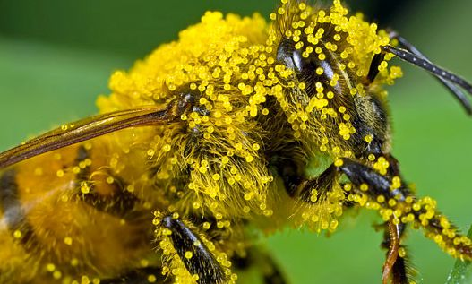
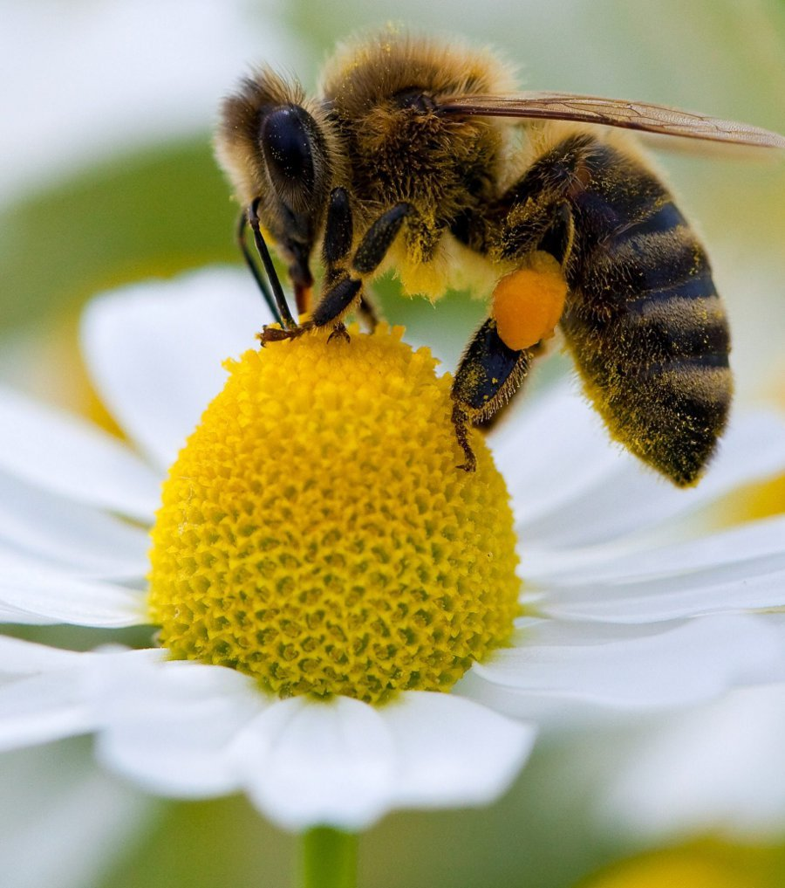

L’abeille a choisi sa fleur et la buttine ! Avec sa trompe elle aspire le nectar de la plante : un liquide très sucré au coeur de la fleur. Quand elle va chercher ce nectar, l’abeille se frotte dans le pollen de la fleur et s’en met partout dans les poils, ce sont des petits granulés qui la rende toute jaune. Elle en récolte dans ses poils ou en faisant des petites boules avec ses petites pattes ! L’abeille récolte du nectar et du pollen pour manger et faire du miel.

L'abeille transporte du pollen dans ses poils

Abeille butinant le coeur d'une fleur
Some sample text about the article this hexagon leads to
Some sample text about the article this hexagon leads to